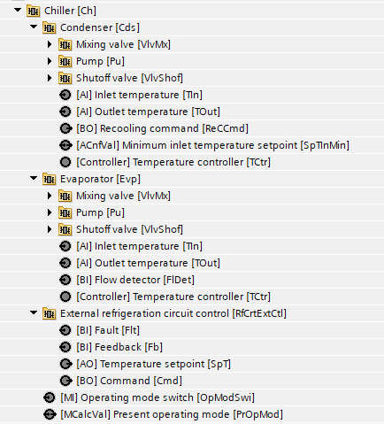
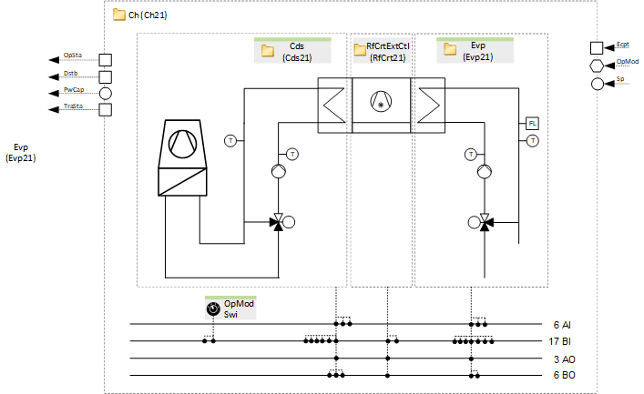
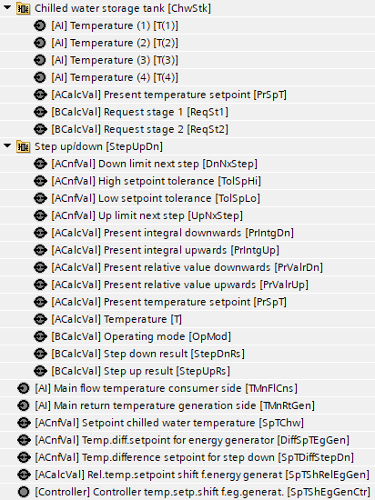
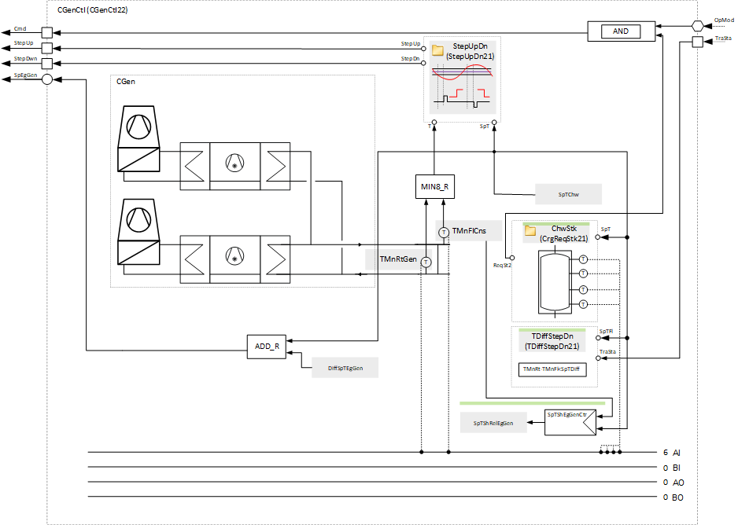

[CGen22x] 制冷发电、多台冷水机组、冷冻水储罐
Name: [CGen22x] Refrigeration generation, multiple chillers, chilled water storage tank (all options)
Library hierarchy:植物
Plant operating modes
- Off
- On
Plant diagram

主要功能 | 主要部件 |
|---|---|
|
|
Program blocks
|
Chiller 1 | |
 |  |
Chiller 2 (Optional) | |
Chiller 3 (Optional) | |
Chiller 4 (Optional) | |
Sensors, setpoints and control | |
[CGenCtl22] Sensors, setpoints and control for multiple refrigeration generators | |
 |  |
Plant operating mode | |
[CGenPltMod21] Plant operating mode determination for refrigeration generation | |
|
|
Power control and compensation | |
Profile determination | |
|
|
Main pump group | |
|
|
Supply chain for chilled water (Optional) | |
|
|